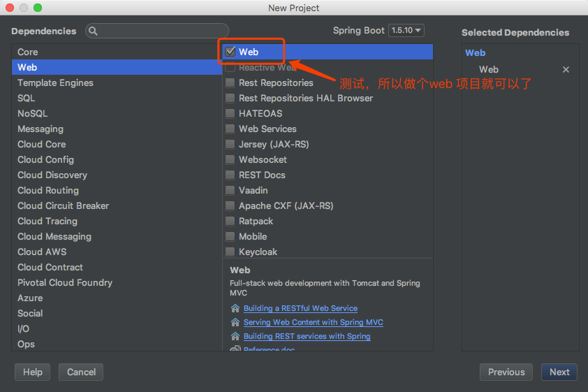
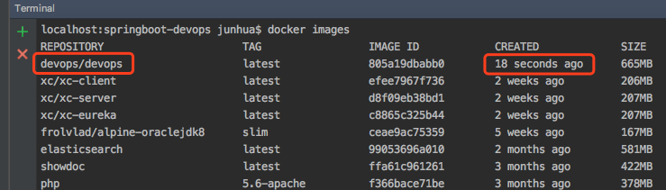

知之愈明,则行之愈笃；行之愈笃,则知之益明.——朱熹（宋）
我们在平常学习了很多的知识，但是如果没有深入去实践，知识掌握就不会牢固，所以需要通过实践来巩固。现在大多数的业务都切换到了Spring Boot，更加复杂和庞大的业务则使用Spring Cloud，当然也有用Dubbo，所以准备在Spring Boot中集成Docker，进行服务化。
创建项目进行集成
创建一个Spring Boot 项目


增加项目对Docker的支持
修改pom.xml配置，增加对应的插件，可以使用Maven进行打包
1
2#Docker 镜像前缀，放在<properties> 标签中
<docker.image.prefix>devops</docker.image.prefix>添加视图模板支持
1
2
3
4<dependency>
<groupId>org.springframework.boot</groupId>
<artifactId>spring-boot-starter-thymeleaf</artifactId>
</dependency>增加对应的maven 插件，插件有多种，这里采用
com.spotify 1
2
3
4
5
6
7
8
9
10
11
12
13
14
15
16
17
18
19
20
21
22
23
24
25
26
27
28
29
30
31
32
33
34
35
36<build>
<finalName>devops</finalName>
<plugins>
<plugin>
<groupId>org.springframework.boot</groupId>
<artifactId>spring-boot-maven-plugin</artifactId>
</plugin>
<!-- docker打包 -->
<plugin>
<groupId>com.spotify</groupId>
<artifactId>docker-maven-plugin</artifactId>
<version>1.0.0</version>
<configuration>
<serverId>docker-hosted</serverId>
<!-- docker仓库地址，用于推送镜像 -->
<registryUrl>${docker.repository}</registryUrl>
<!-- 设置为false，避免自动推送镜像 -->
<pushImage>false</pushImage>
<!-- Dockerfile路径 -->
<dockerDirectory>src/main/docker</dockerDirectory>
<!-- 构建的镜像名称 -->
<imageName>${docker.image.prefix}/${project.artifactId}</imageName>
<imageTags>
<imageTag>latest</imageTag>
</imageTags>
<resources>
<resource>
<targetPath>/</targetPath>
<directory>${project.build.directory}</directory>
<include>${project.build.finalName}.jar</include>
</resource>
</resources>
</configuration>
</plugin>
</plugins>
</build>修改Maven settings 文件配置（主要的目的是为了方便后面我们将自己的服务推送到自己的私服，方便管理）
1
2
3
4
5
6
7
8
9
10
11
12
13
14
15
16
17<pluginGroups>
<pluginGroup>com.spotify</pluginGroup>
</pluginGroups>
#本地私服的配置
</profiles>
<profile>
<id>nexus</id>
<properties>
<docker.repository>http://192.168.100.77:8081/repository/docker</docker.repository>
</properties>
</profile>
</profiles>
#激活私服配置
<activeProfiles>
<activeProfile>nexus</activeProfile>
</activeProfiles>
上面基本的pom配置就完成了，之后开始配置Docker相关的脚本
Docker脚本配置
在src/main 目录下创建docker 文件夹，刚刚上面的pom配置里声明了Dockerfile的路径
创建文件Dockerfile ，注意文件没有后缀，之后增加如下脚本
1 | FROM java:8 #基本镜像 |
打包、运行镜像
创建对应的测试文件，打包
1 | mvn clean package docker:build # 一气呵成O(∩_∩)O~~ |
在运行docker命令前，先确认电脑上的docker环境是否配置成
1 | docker version |
上面说明Docker是正常启动的
然后查看镜像
1 | docker images |

上图说明我们的镜像打包成功
然后运行一下，检查镜像是否能够正常启动
1 | 启动镜像 -d 表示后台运行，-p 端口进行映射 --name docker服务名称 devops/devops:latest 运行的镜像 |

如果，说明服务是正常启动了，之后请求
http://localhost:8080/index?name=World
能够请求成功，说明镜像部署成功
停止释放镜像
1 | 养成好习惯，停止释放镜像 |